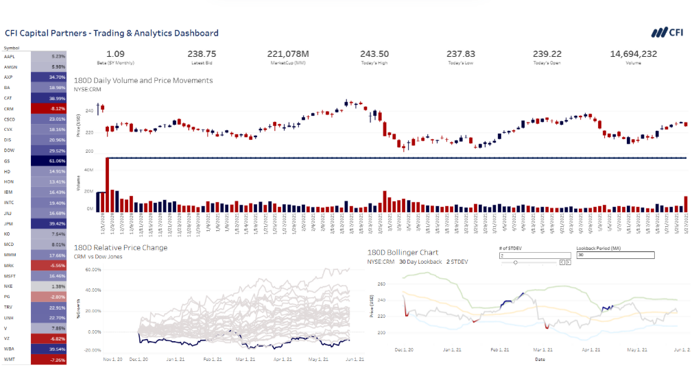
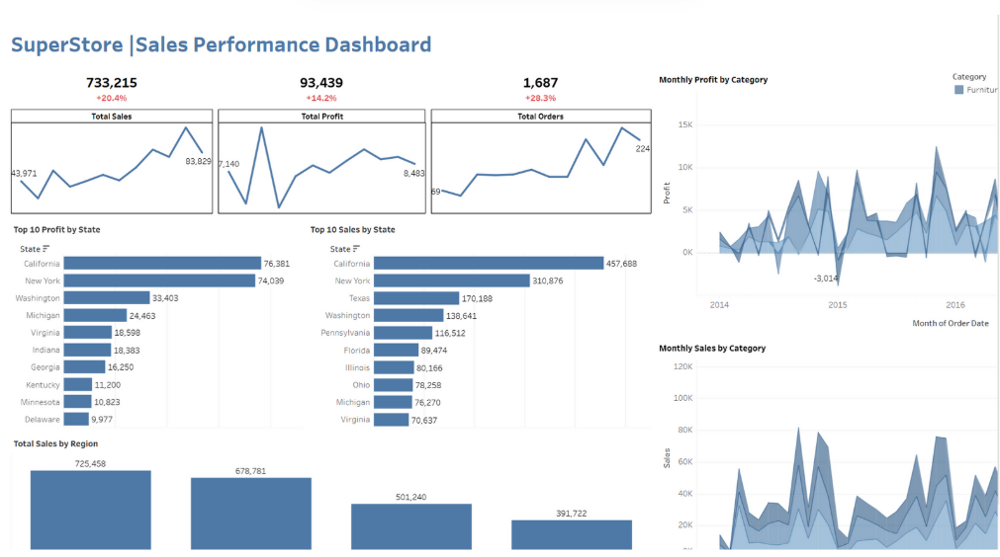
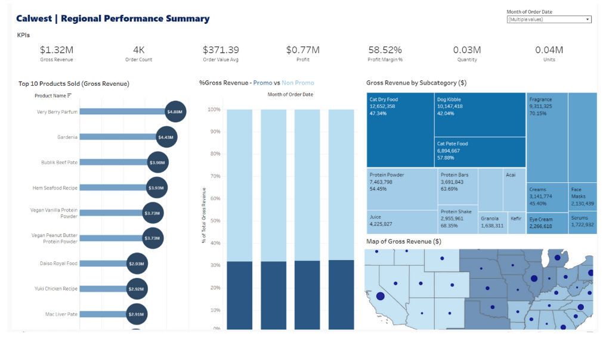

"Beyond Numbers, Into Action."
Muhammad Haris
Fariyano
Insightful, Analytical, and Action-Oriented. With a strong foundation in software engineering and real-world analytics experience, I support teams in transforming complex data into clear, actionable insights that drive measurable results.
Data Visualization
Tableau & Looker Studio
About Me
Data Analysis & Insights
Conducting exploratory data analysis (EDA) to uncover operational performance and market patterns.
Data Wrangling & Modeling
Cleaning messy data, performing ETL, building data marts, and optimizing SQL queries.
Data Visualization & BI
Crafting responsive, executive-level interactive dashboards with Tableau, Power BI, and Looker.
Strategic Data Consulting
Bridging technical numbers into strategic recommendations with compelling data storytelling.
Dedicated to Empowering Business with Data
Lulusan Sarjana Terapan Teknik Informatika dari Politeknik Harapan Bersama dengan ketertarikan tinggi pada bidang Data Analytics. Memiliki pengalaman dalam mengolah dan memvisualisasikan data, membuat dashboard, serta mengembangkan model prediktif berbasis Python dan SQL.
Aktif mengikuti pelatihan dan program intensif di bidang data analytics dari platform terkemuka seperti Dicoding, RevoU, Rakamin Academy, dan Dibimbing.id. Terbiasa bekerja dengan tools analitik mutakhir seperti BigQuery, Tableau, dan Looker Studio untuk memandu pengambilan keputusan berbasis data.
Where I've Learned & Grown
Experience
- Mempelajari konsep Big Data, arsitektur Data Warehouse, dan proses ETL secara komprehensif.
- Melakukan SQL querying mendalam untuk eksplorasi data transaksi penjualan dan performa operasional.
- Mengembangkan Data Mart terstruktur dari data warehouse sebagai basis analisis bisnis.
- Membangun dashboard interaktif menggunakan Looker Studio untuk memvisualisasikan KPI penjualan.
- Menyampaikan data storytelling untuk menjelaskan actionable insights kepada para stakeholder.
- Analyzed complex financial data on deposits, loans, and credit customer accounts.
- Created interactive dashboards to communicate financial KPIs and quarterly trends.
- Built a robust financial dashboard using Looker Studio for enhanced leadership decision-making.
Education
- Fokus studi pada rekayasa perangkat lunak, sistem basis data, algoritma, serta sains data.
- Aktif berkontribusi dalam riset dan inovasi teknologi komputasi mahasiswa.
- Staff of Research and Development Department at HIMATIKA UIN Jakarta.
Skills & Capabilities
Data Analytics Methods & Techniques
Methodological frameworks utilized across the end-to-end data lifecycle
Programming Languages
Analytics & DB Tools
Visualization & BI
Featured Data Projects
Explore interactive business intelligence dashboards, statistical models, and end-to-end data analytics solutions.

TableauTrading & Analytics Dashboard
An interactive dashboard to visualize trading data, track performance metrics, and identify key trends in financial markets.

TableauSales Performance Dashboard
Interactive dashboard built to track key sales metrics, identify trends, and provide actionable insights for decision-makers.

TableauRegional Performance Summary
A Tableau dashboard providing an overview of regional performance, highlighting key metrics and geographical insights.
Professional Certifications
Industry recognized credentials validating competencies in Data Analytics, Power BI, Tableau, and Machine Learning.
IBM Data Analytics with Excel and R
Issued: Apr 2025
Developed skills in data wrangling, statistical analysis, and reporting using Excel and R programming language.

Microsoft Power BI Data Analyst
Issued: May 2025
Demonstrated expertise in designing, building, and deploying scalable data models and reports using Power BI.
Data Modeling in Power BI
Issued: May 2025
Validated expertise in designing robust data models, optimizing transformations, and creating relationship structures in Power BI.


Get In Touch
Have an analytics project, business intelligence opportunity, or collaboration in mind? Feel free to reach out!
Quick Inquiries
Send a direct message directly to my WhatsApp